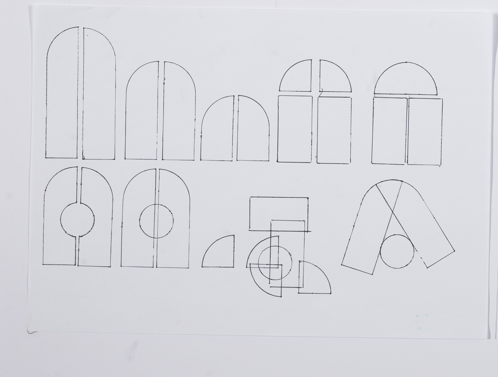
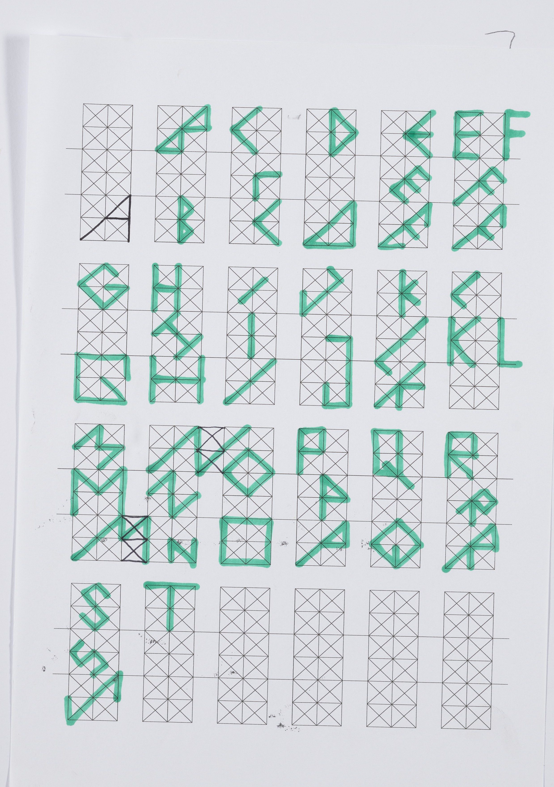
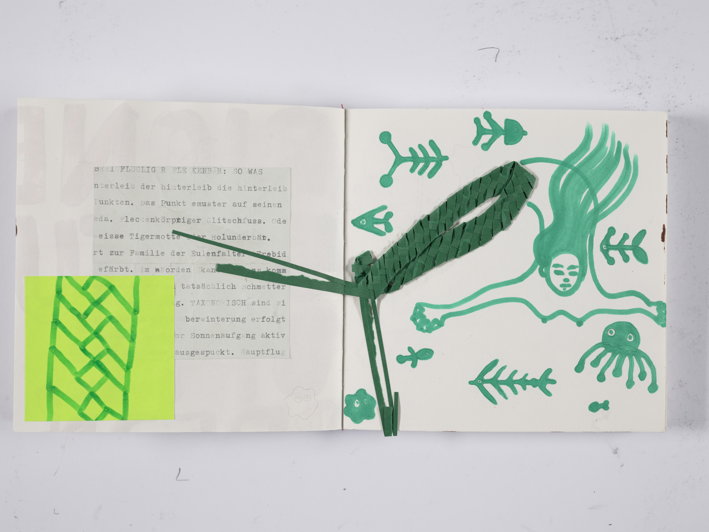
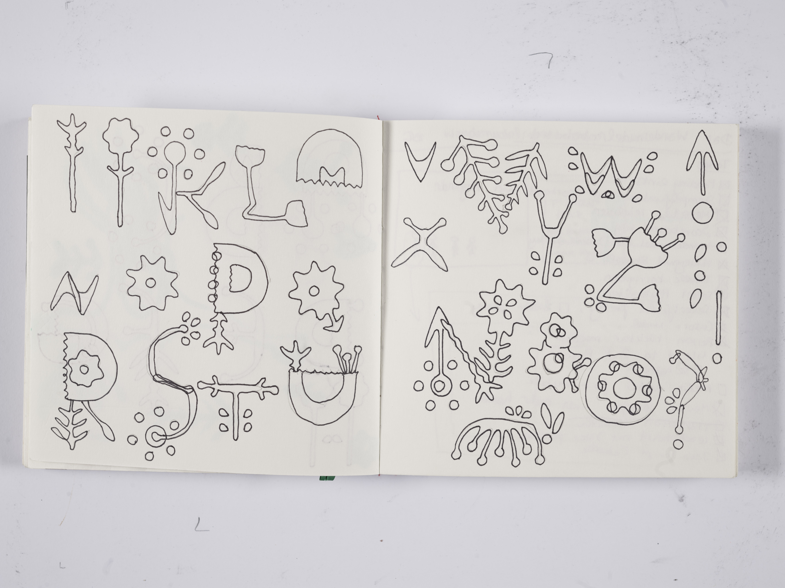
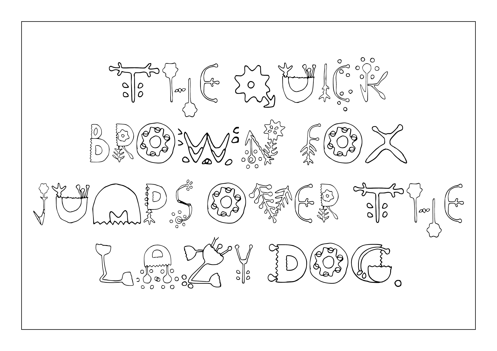

digitale grundlagen
DOKUMENTATION
Lena Buchmann
Gorch-Fock-Str.7
38104 Braunschweig
l.buchmann@hbk-braunschweig.de
Matrikelnummer: 80302
3.2 — grid based type design
Everything can be a grid. A guideline to create new shapes. A limit within which new lines can occur. When I was a child, I found children’s drawing stencils stupid because they never accounted for the gap the pencil would create from the edge of the stencil. The shapes would always be too narrow. However, if you use the stencil not for what it was intended for, but for the purpose of a grid, it can become fun.
First we tried creating "A"s from some bauhaus stencils and went to see how different they all were.

Then we tried how we could use a grid as guides to create fonts within the grids limitations. Some letters were easier than others.

Then we tried what else could be used as a stencil to make fonts. I tried... a stencil.

Eventually I made a font. I struggled to find something I liked very much. But now I do. Let me present to you, my font:
Flowee

